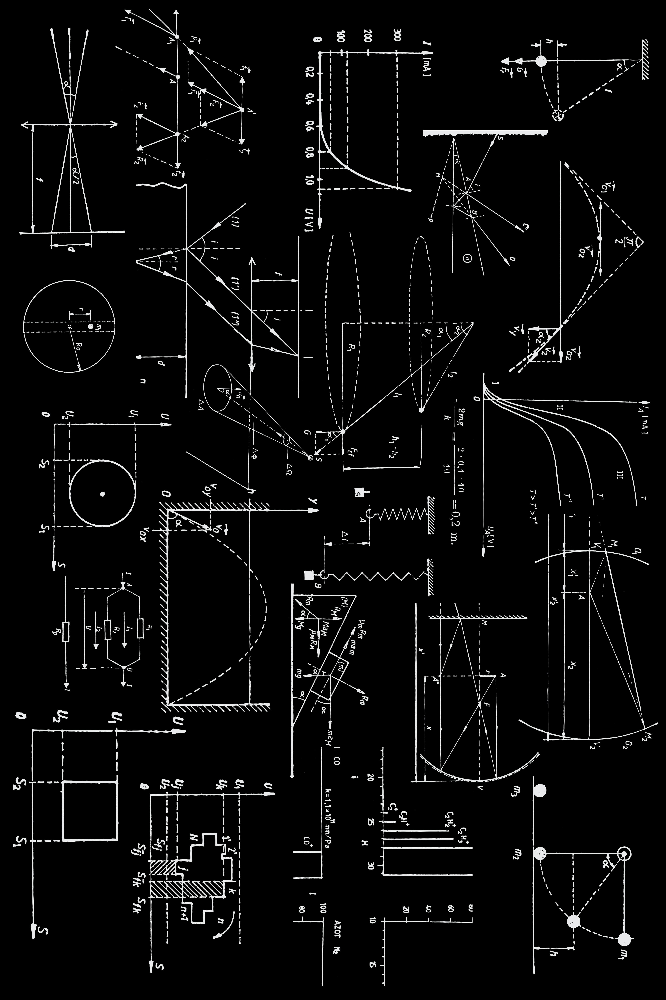
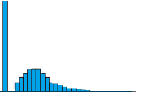

In this post, I will be exploring Tweedie distribution.

Photo by Dan Cristian Pădureț on Unsplash
When I first encountered this distribution many years ago, I have to say the name of the distribution reminds me of a cartoon I used to watch when I was younger…

Taken from giphy
Tweedie distribution is a special case of an exponential distribution (Glen).
It could generate a distribution with a cluster of data with zero value as shown below.

Taken from this website
This can be very handy when we want to model insurance claims.
Parameters
In R statmod package, the Tweedie distribution has two arguments:
var.power
link.power

Taken from R documentation
At the point of writing, I can’t seem to find any materials to explain the link.power argument in the function, except link.power = 1 means we are using a log link.
Demonstration
Setup the environment
I will be using the Tweedie distribution in statmod package.
pacman::p_load(tidyverse, CASdatasets, tidymodels, statmod, ghibli)Import the data
For this demonstration, I will be using the car insurance dataset from CASdatasets package.

Photo by Vlad Deep on Unsplash
I will rename the datasets so that the name of the datasets are shorter.
In this demonstration, I will perform predictions on the claim counts.
To do so, I will count how many times the insureds have made claims under each policy.
clm_cnt <-
clm_df %>%
group_by(id_client, id_vehicle) %>%
summarise(tot_clm_cnt = sum(claim_nb))Then, I will join the claim count with the main dataset before performing any predictions.
For simplicity, I will also remove any rows with missing values.
Model Building
Now I will build the GLM model with Tweedie distribution.
clm_cnt_glm <-
glm(tot_clm_cnt ~
drv_age1
+ drv_drv2
+ vh_age
+ pol_bonus
+ pol_coverage
+ pol_usage
+ pol_duration
+ pol_sit_duration
+ pol_pay_freq
+ vh_type
+ vh_speed
+ vh_value
+ vh_weight
,family = tweedie(var.power = 1.8
,link.power = 0.8)
,data = pol_clm_df
)I will also run the chi-square test to check the significance of the predictors.
anova(clm_cnt_glm, test = "Chisq")Analysis of Deviance Table
Model: Tweedie, link: mu^0.8
Response: tot_clm_cnt
Terms added sequentially (first to last)
Df Deviance Resid. Df Resid. Dev Pr(>Chi)
NULL 99998 685490
drv_age1 1 316.2 99997 685173 3.591e-13 ***
drv_drv2 1 201.6 99996 684972 6.414e-09 ***
vh_age 1 6515.3 99995 678457 < 2.2e-16 ***
pol_bonus 1 139.0 99994 678318 1.433e-06 ***
pol_coverage 3 5380.3 99991 672937 < 2.2e-16 ***
pol_usage 2 487.3 99989 672450 < 2.2e-16 ***
pol_duration 1 76.4 99988 672374 0.0003506 ***
pol_sit_duration 2 68.6 99986 672305 0.0032361 **
pol_pay_freq 3 50.7 99983 672254 0.0371260 *
vh_type 1 7.4 99982 672247 0.2664458
vh_speed 1 416.5 99981 671830 < 2.2e-16 ***
vh_value 1 852.7 99980 670978 < 2.2e-16 ***
vh_weight 1 109.0 99979 670869 1.971e-05 ***
---
Signif. codes: 0 '***' 0.001 '**' 0.01 '*' 0.05 '.' 0.1 ' ' 1From the result above, it seems like having the vehicle type doesn’t improve the model since the p-value is less than 0.05.
Smaller Model
Next, I will build a smaller model and perform a statistical test to determine which model to use.
As suggested by (Rodriguez 2023), we will be using F-test to decide which model we should be using.
In general, to perform an F-test, we will do the following steps (PennState Eberly College of Science):
Build a full model
Then, build a smaller model
Use F-statistics to guide us on whether we should be accepting the smaller model
\(H_0\): Use The Smaller Model
\(H_\alpha\): Use Full Model
With that, I build a smaller model without the following variables:
drv_drv2
pol_pay_freq
vh_type
clm_cnt_glm_smaller <-
glm(tot_clm_cnt ~
drv_age1
+ vh_age
+ pol_bonus
+ pol_coverage
+ pol_usage
+ pol_duration
+ pol_sit_duration
+ vh_speed
+ vh_value
+ vh_weight
,family = tweedie(var.power = 1.8,link.power = 0.8)
,data = pol_clm_df
)Next, I will pass the models into the anova function and indicate I would like to perform a likelihood ratio test.
anova(clm_cnt_glm_smaller
,clm_cnt_glm
,test = 'F')Analysis of Deviance Table
Model 1: tot_clm_cnt ~ drv_age1 + vh_age + pol_bonus + pol_coverage +
pol_usage + pol_duration + pol_sit_duration + vh_speed +
vh_value + vh_weight
Model 2: tot_clm_cnt ~ drv_age1 + drv_drv2 + vh_age + pol_bonus + pol_coverage +
pol_usage + pol_duration + pol_sit_duration + pol_pay_freq +
vh_type + vh_speed + vh_value + vh_weight
Resid. Df Resid. Dev Df Deviance F Pr(>F)
1 99985 671048
2 99979 670869 6 179.16 4.9916 4.025e-05 ***
---
Signif. codes: 0 '***' 0.001 '**' 0.01 '*' 0.05 '.' 0.1 ' ' 1The p-value is less than 0.05 and we will reject the null hypothesis. There is a statistical signification linear association between claim count and additional parameters.
Model Performance
In this next section, I will check the model performance.
Before that, I will use augment function to generate the prediction.
The beauty of this function is that it could help us to append the predictions to the dataset we pass into the function.
clm_cnt_glm_pred <-
clm_cnt_glm %>%
augment(pol_clm_df
,type.predict = "response")Note that the default prediction type is link. To get the same scale as the target variable, I will indicate the type.predict would be “response”.
To double-check, I have also run predictions by using the predict function from base R.
predict(clm_cnt_glm
,newdata = pol_clm_df
,type = "response"
) %>%
as_tibble()# A tibble: 99,999 x 1
value
<dbl>
1 0.155
2 0.192
3 0.176
4 0.0983
5 0.153
6 0.0813
7 0.163
8 0.154
9 0.140
10 0.163
# ... with 99,989 more rowsLastly, I will pass the target variable and fitted values to rmse function to compute the RMSE.
rmse(clm_cnt_glm_pred,
truth = tot_clm_cnt,
estimate = .fitted)# A tibble: 1 x 3
.metric .estimator .estimate
<chr> <chr> <dbl>
1 rmse standard 0.394It seems like on average, our model is predicting 0.4 more or less than claims than actual.
To further improve the model, we could consider modeling the different coverage types separately.
Following is the proportion of different claim counts within each policy converage:
pol_clm_df %>%
mutate(tot_clm_cnt = as.factor(tot_clm_cnt)) %>%
ggplot(aes(pol_coverage, fill = tot_clm_cnt)) +
geom_bar(position = "fill") +
scale_fill_manual(values = ghibli_palette(name = "PonyoLight"
,n = 7
,type = "discrete")) +
scale_y_continuous(labels = scales::percent) +
xlab("") +
ylab("") +
labs(title = "Proportion of Claim Counts by Different Policy Coverage") +
coord_flip() +
theme_minimal() +
theme(legend.position = "bottom") +
guides(fill = guide_legend(nrow = 1, byrow = TRUE))From the results, we could observe Maxi has the highest proportion of policies making at least one claim.
We could improve the overall model performance by making predictions on each policy coverage separately.
Conclusion
That’s all for the day!
Thanks for reading the post until the end.
Feel free to contact me through email or LinkedIn if you have any suggestions on future topics to share.
Refer to this link for the blog disclaimer.
Till next time, happy learning!

Photo by Karolina Grabowska